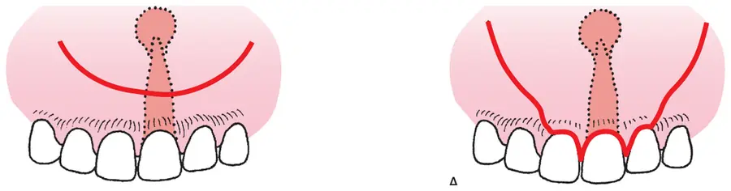
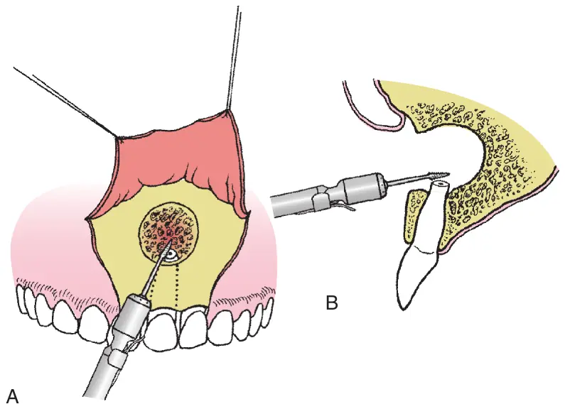

نسخه استخراجشده؛ ترجمه یا تأیید علمی انجام نشده است. وضعیت: captured
دسترسی جراحی، مصالحهای است میان نیاز به دید محل جراحی و آسیب بالقوه به ساختارهای مجاور. و فلپی که خوب طراحی و با دقت بلند شود، به دسترسی خوب و ترمیم بیعارضه میانجامد.

و سه برش شایع: نیمماه (semilunar)، زیرحاشیهای (submarginal)، و موکوپریوستئال کامل یا سالکولار. و دو تای دوم، طراحی سهگوشه (مثلثی) یا چهارگوشه (مستطیلی) دارند.
۱ — برش نیمماه: محبوب، ولی باید از آن پرهیز کرد.
چیست؟ برشی افقی، اندکی منحنی و نیمماهی در مخاط آلوئولار. و موقعیتش اجازهی بلند کردن آسان و دسترسی سریع به ساختارهای پریرادیکولار را میدهد.
ولی معایبش:
و نتیجه: این طراحی برای بیشتر جراحیهای اندودنتیک کنتراندیکه است.
۲ — برش زیرحاشیهای: جزء افقیاش در لثهی چسبنده با یک یا دو برش عمودی همراه است. و معمولاً در خط افقی بهصورت اسکالوپ با زوایای منفرجه در گوشهها زده میشود. و موفقترین کاربردش در ناحیهی قدامی ماگزیلاست.
۳ — موکوپریوستئال کامل (سالکولار): طراحی ترجیحی بر دو تای دیگر.
و شش مزیتش: حداکثر دسترسی و دید، برش نزدن روی ضایعه یا نقص استخوانی، خطر کمتر خونریزی، دید کامل ریشه، امکان روتپلنینگ و کانتور استخوان، و احتمال کمتر ترمیم با تشکیل اسکار.
و معایبش: جاگذاری و بخیهی فلپ دشوارتر است؛ و اگر فلپ بهخوبی جاگذاری نشود، تحلیل لثه میتواند پدید آید که حاشیههای تاج یا سطوح ریشهی سرویکال یا هر دو را آشکار میسازد.
و یک قاعدهی کلی طراحی: فلپها باید ذوزنقهای طراحی شوند، با قاعدهای پهنتر از لبه.
ولی یک ظرافت مهم: طراحی ذوزنقهای، جزء درازتری در بافت غیرکراتینیزه میسازد. در مقابل، با زدن برشهای رهاکنندهی عمودی در طول محور بلند دندانهای مجاور، طول فلپ در بافت غیرکراتینیزه کم میشود، که درد را کاهش و ترمیم را تسریع میکند.
کورتاژ — و سه هدفش: بیشتر بافت گرانولوماتوز و ملتهب پیرامون آپکس باید برداشته شود، برای دسترسی و دید آپکس، برای گرفتن بیوپسی جهت بررسی هیستولوژیک در صورت اندیکاسیون، و برای کم کردن خونریزی.

و یک اصل واقعگرایانه: بافت در صورت امکان باید با کورت تیز و با اندازهی مناسب انوکلئه شود، هرچند برداشتن کامل ضایعه معمولاً رخ نمیدهد. و حفرهی استخوانی تمیزتر، کمترین خونریزی و بهترین دید را دارد.
و چرا کورتاژ آن دبری را برمیدارد؟ اغلب دبری فراوانی حین درمان اندودنتیک اولیه از آپکس بیرون رانده شده؛ تمیز کردن این دبری، آنچه را که ممکن است هستهی عفونت حاد یا مزمن بوده حذف میکند.
و دو محدودیت مهم:
رزکسیون انتهای ریشه — و چرا اندیکاسیون دارد: چون ناحیهای را برمیدارد که بهاحتمال زیاد ضعیفترین ابتوراسیون را داشته، بهعلت فاصله از بخش تاجی دندان. و حضور کانالهای فرعی هم در آپکس بیشتر میشود، که میتوانند در ابتدا تمیز و دبرید نشده باشند و منبعی از عفونت پیوسته باقی بمانند.
و تکنیک: پیش از برش، ترنچی پیرامون آپکس با فرز فیشور مخروطی ساخته میشود تا انتهای ریشه آشکار و ایزوله گردد، و رزکسیون با همان فرز انجام میشود. و بسته به محل، بِوِلی با درجات متفاوت در جهت فاسیولینگوال زده میشود.
و یک اصل کلیدی دربارهی بِوِل: با استفاده از ابزارهای اولتراسونیک برای آمادهسازی آپکس، بِوِل کمینهای لازم است، بهویژه در دندانهای قدامی ماگزیلا. و با کمینه کردن طول بِوِل، توبولهای عاجی کمتری آشکار میشوند، پس نشت به ناحیهی آپیکال کم میگردد.
و مقدار ریشهی برداشتهشده: بهطور کلی تقریباً ۲ تا ۳ میلیمتر از ریشه رزکت میشود — بیشتر، اگر برای دسترسی آپیکال لازم باشد یا ابزاری در ناحیهی آپیکال گیر کرده باشد؛ و کمتر، اگر برداشتن بیشازحد، ثبات ریشهای که از پیش کوتاه است را بیشتر بهخطر بیندازد.
و آمادهسازی رتروگرید — یک عدد کلیدی: عمق آمادهسازی باید دستکم ۱ میلیمتر عمیقتر از طول بِوِل باشد تا آپکس بهقدر کافی سیل شود.
و چرا اولتراسونیک جای فرز را گرفت؟ ابزارهای چرخشی برای دنبال کردن سیستم کانال ریشه بیشازحد حجیم و دستوپاگیرند و گاهی به آمادهسازیهای ناهمراستا میانجامند.
و مزایای نوکهای اولتراسونیک:
و یک احتیاط: حین آمادهسازی آپکس با اولتراسونیک، شستوشوی پیوسته با سالین لازم است تا از گرم شدن بیشازحد که به شکستن این ابزارهای ظریف میانجامد جلوگیری شود.
و مادهی پرکنندهی انتهای ریشه — پنج ویژگی لازم: باید خوب سیل کند، بافتسازگار باشد، بهآسانی وارد شود، کمترین اثر را از رطوبت بگیرد، و در رادیوگرافی دیده شود. و مهمتر: ماده باید پایدار و برای همیشه غیرقابل جذب باشد.
و MTA — چرا فراگیر شد:
و عدد موفقیت: یک متاآنالیز در ۲۰۱۰ میزان موفقیت بالاتری با MTA بهعنوان مادهی پرکننده نشان داد: ۹۱٫۴ درصد، بیش از سایر مواد.